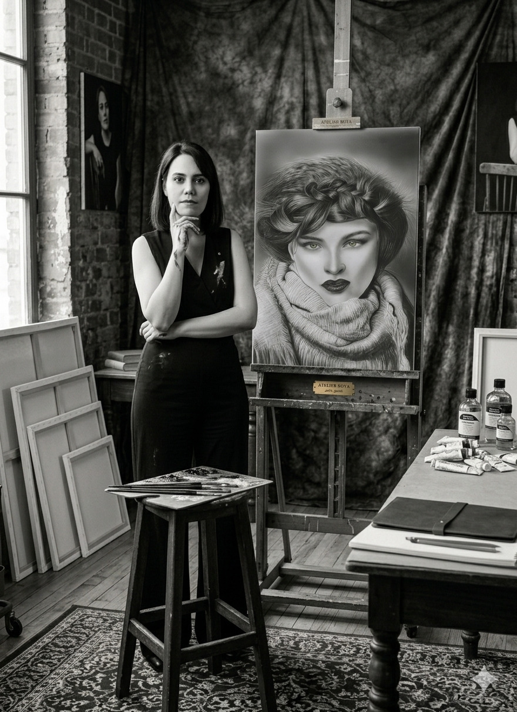

About Mary G.
"Art is my voice to tell stories that have remained hidden, to turn silence into color."
The artistic journey of Mary G. began from Iran—a land defined by its rich culture and ancient civilization. Having lived through years of social restrictions, her art has evolved into a vital instrument for making the silent cries of Iranian women heard. For her, art is a relentless pursuit of the right to freedom, amplifying voices that have been systematically marginalized for generations.
Behind every one of her works lies a foundation of intense passion, hard work, and a resilient hope to be a worthy representative of her heritage. Mary G. views art not merely as an emotional expression, but as a voice for those in society who have been neither seen nor heard. Her creations—stretching from intricate, hyper-realistic portraits to fluid, evocative movements—go beyond technical skill; they unveil hidden stories and unspoken truths. She invites the audience not only to view her art but to deeply feel the profound emotions and the journey of resilience it embodies.
Behind every one of her works lies a foundation of intense passion, hard work, and a resilient hope to be a worthy representative of her heritage. Mary G. views art not merely as an emotional expression, but as a voice for those in society who have been neither seen nor heard. Her creations—stretching from intricate, hyper-realistic portraits to fluid, evocative movements—go beyond technical skill; they unveil hidden stories and unspoken truths. She invites the audience not only to view her art but to deeply feel the profound emotions and the journey of resilience it embodies.